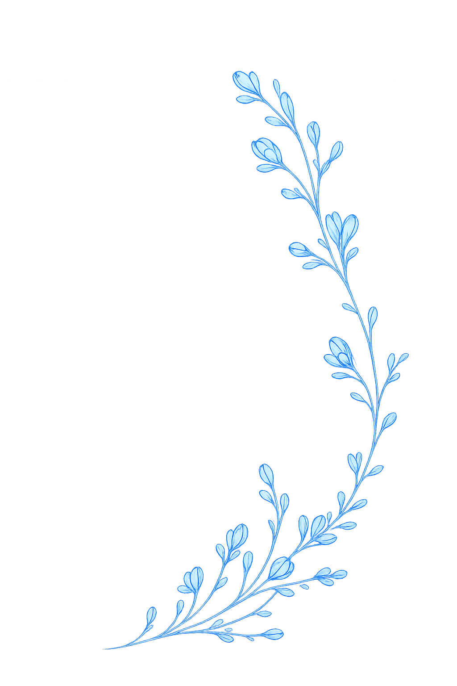
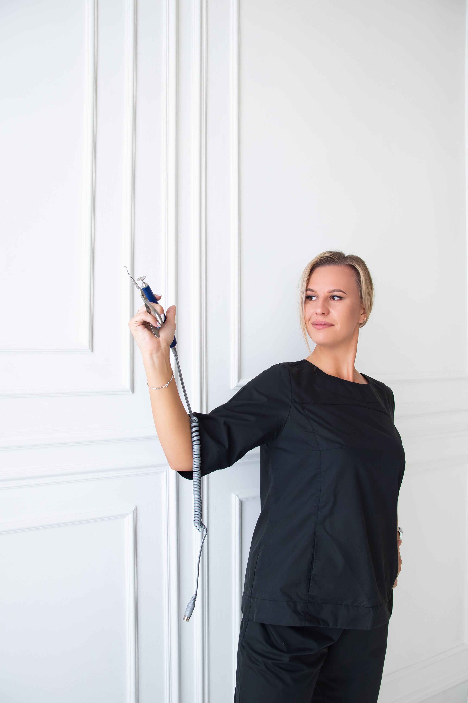
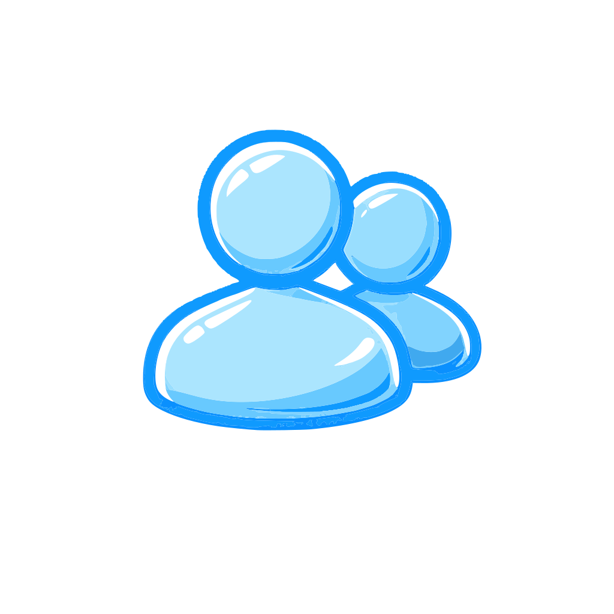
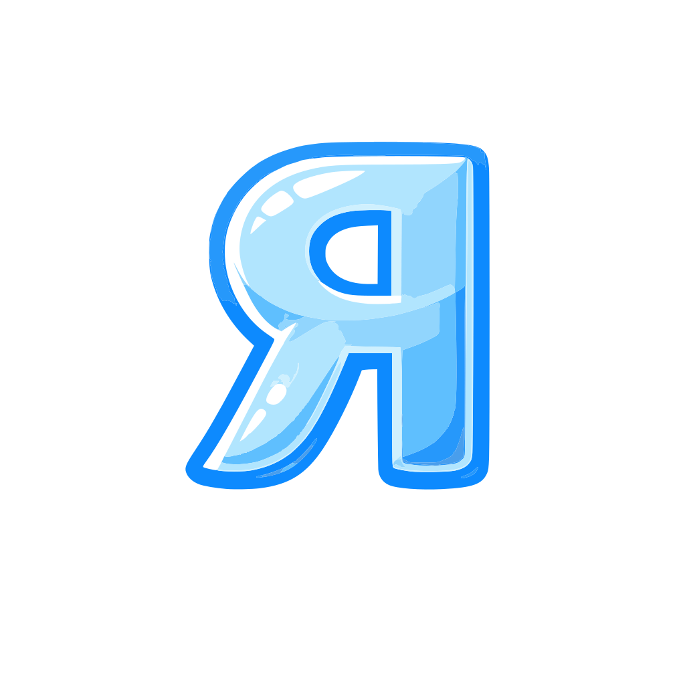
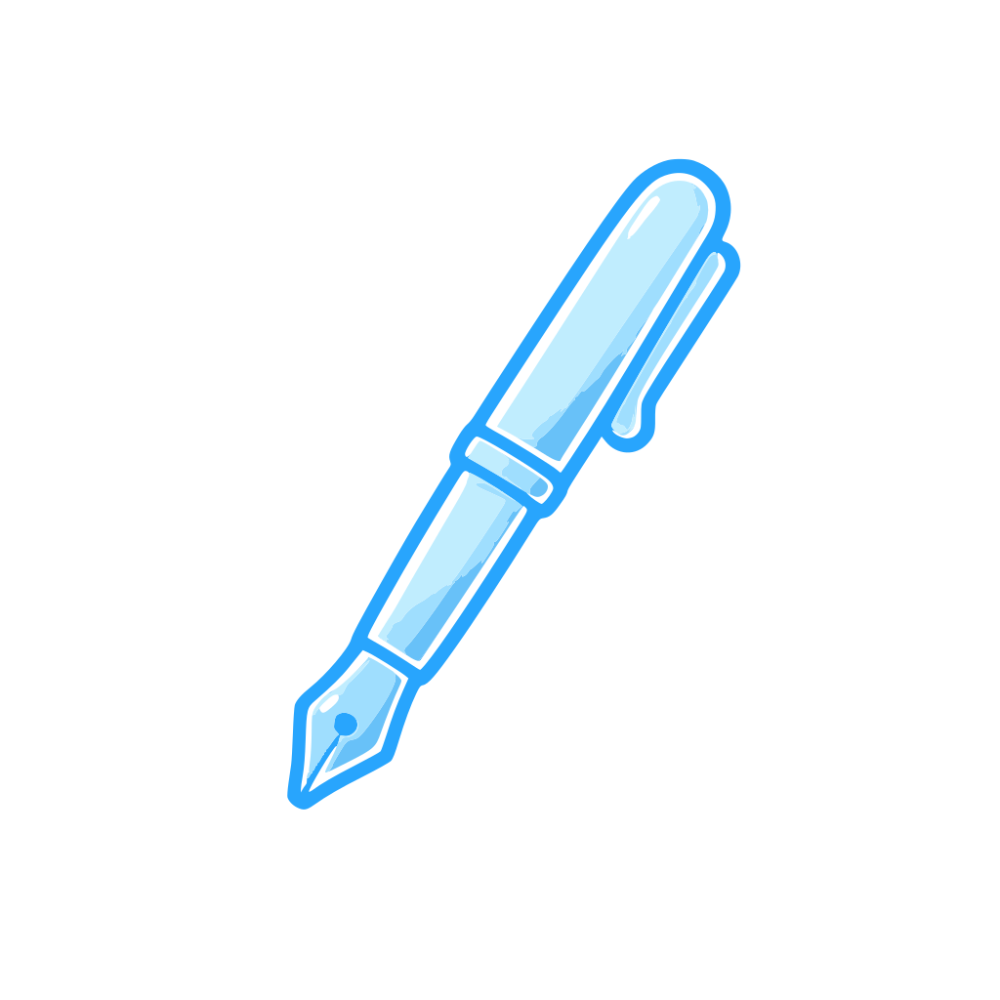
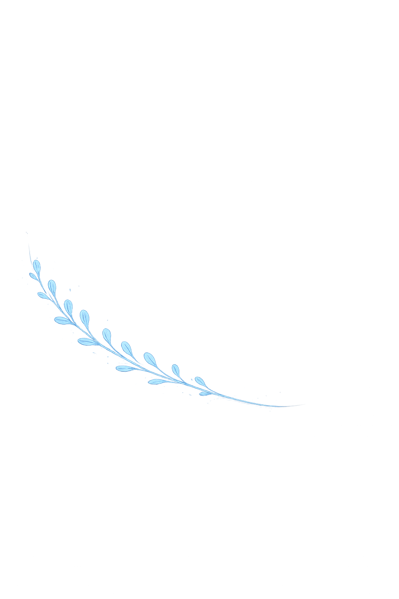

500+ клиентовО себе
Анна Кудурова
Подолог · Инструктор · Спикер
Я практикующий подолог, инструктор, спикер и человек, который всерьёз увлёкся здоровьем стоп и ногтей.
В нейл-индустрии я работаю с 2020 года, но несколько лет назад, когда прошла обучение по педикюру, поняла — это именно моё. Однако очень быстро осознала, что педикюр — это не только про эстетику и красивый внешний вид. За красивым результатом часто стоит гораздо больше: комфорт и качество жизни человека.
Именно поэтому я начала углублённо изучать подологию и уже более 3 лет профессионально работаю со сложными случаями, помогая клиентам решать проблемы стоп и ногтей.
Сегодня моя работа — это не только практика с клиентами, но и обучение мастеров, выступления и развитие профессионального сообщества.
Инструкторская деятельность
С 2024 года я являюсь инструктором бренда Rosilak и провожу обучение по программам:
Программы Rosilak
• Базовое введение в мир педикюра — Пилинг-педикюр Rosilak
• Повышение квалификации по технике Пилинг-педикюра Rosilak
Авторские курсы
• Аппаратный педикюр с введением в подологию
• Коррекция ногтей без страха и боли (титановые нити, тампонады, тейпирование)
• Повышение квалификации по индивидуальному запросу
Практика и обучение
Продолжаю создавать актуальные образовательные программы и делиться опытом с коллегами по всей стране
Профессиональная деятельность
Я являюсь спикером онлайн- и офлайн-конференций, регулярно выступаю на темы подологии, развития специалистов, правовых норм и профессионального роста. Также активно участвую в организации профессиональных мероприятий.
Одним из таких проектов стала подологическая конференция «Опора 1.0», которая состоялась 25 апреля 2026 года в городе Ульяновске и объединила специалистов для обмена знаниями, опытом и развития подологии в регионе.
Помимо практической и преподавательской деятельности, я продолжаю профессиональное развитие и сейчас получаю медицинское образование, которое завершаю в 2027 году. Для меня это не просто очередной диплом, а возможность ещё глубже понимать процессы, происходящие в организме, и смотреть на проблемы клиентов шире.

Почему мне доверяют
Более 500 клиентов в базе

Рейтинг 5.0 на Яндекс Картах и статус «Хорошее место 2025 и 2026»
Инструктор бренда Rosilak

Авторские программы обучения
Спикер и организатор профессиональных мероприятий
Получаю медицинское образование (окончание в 2027 году)
Постоянно обучаюсь и повышаю квалификацию

Мой подход
Мой принцип работы:
Здоровье + эстетика + бережный подход
Я уверена, что работа специалиста — это не просто выполнение процедуры.
Для меня важно понимать процессы глубже, искать причину проблемы, работать бережно и помогать людям не только получать красивый результат, но и чувствовать комфорт.
В своих социальных сетях я делюсь полезной информацией о здоровье стоп и ногтей, разбираю мифы, показываю реальные случаи и объясняю сложные вещи простым языком.